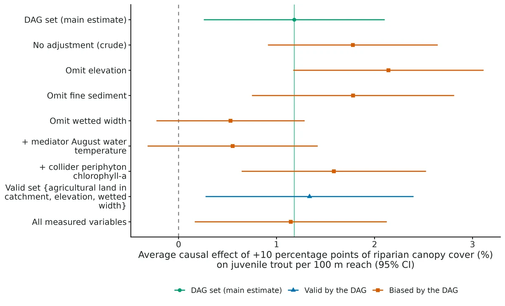
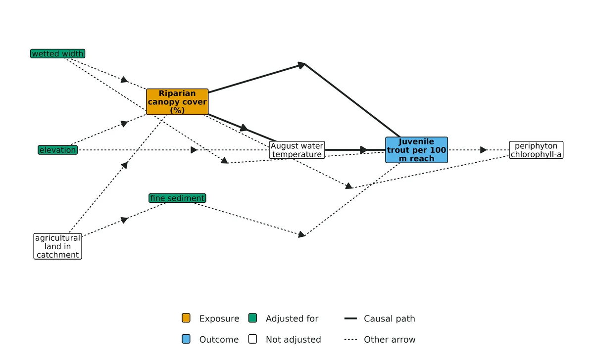
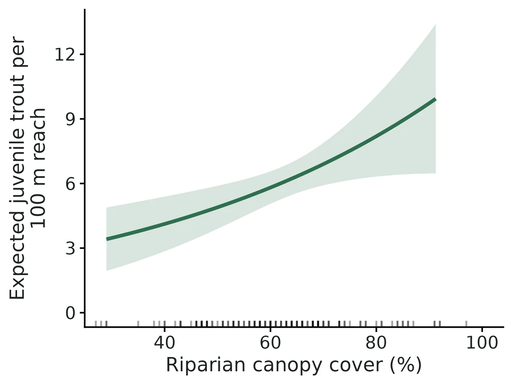
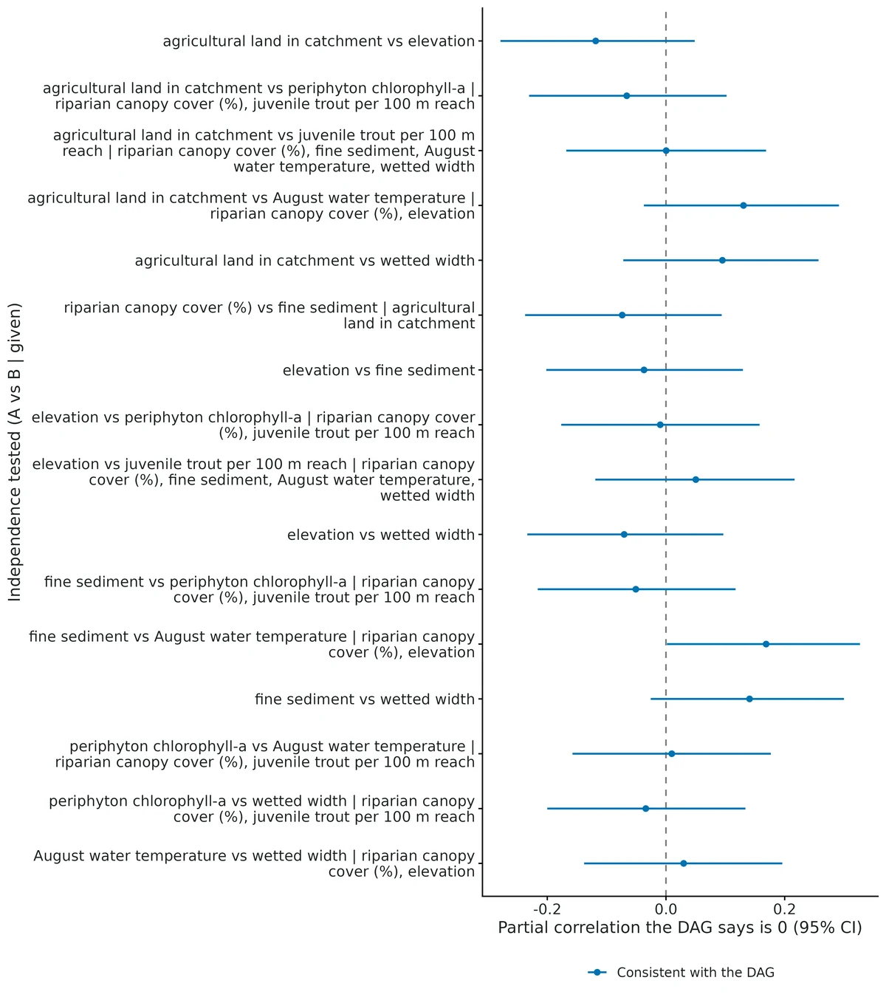

Causal effects from observational data (DAG + g-computation)
What would happen to the outcome if we changed the exposure? For example: "If riparian canopy cover increased by 10 percentage points at every reach, how many more juvenile trout would there be per 100 m?" The answer is an average causal effect on the scale the biologist measures (count, probability, mean), plus a ratio (rate or risk ratio) and the link-scale coefficient.
Is this the right analysis?
Use it when
The question is causal ("does canopy cover increase trout?", "what would happen to native plants if pastures were not grazed?") and the data are observational (field surveys, monitoring). The researcher can draw a DAG of how their variables cause each other. Also panels (sites measured repeatedly) with unmeasured site-level or year-level confounders, via fixed effects.
Not for
Pure prediction or description (use glm); experiments with randomised treatment (use glm; no adjustment needed); hypotheses about a whole network of paths with latent constructs (use sem); imperfect detection of the outcome (occupancy/N-mixture modules; their covariates can be chosen with this module's DAG); feedback over time (past outcome -> future exposure), mediation with exposure-mediator interaction, or effects identified only by the front-door criterion or instruments (not implemented).
The data you need
One CSV, one row per site (or per site x time for panels); a column for the exposure, the outcome and each measured variable in the DAG; a DAG written in dagitty syntax in the config.
What the example's main data file looks like:
| reach_id | stream | survey_date | canopy_pct | trout_per_reach | elevation_m | agriculture_pct | fine_sediment_pct |
|---|---|---|---|---|---|---|---|
| R001 | Mill Cr | 2025-08-01 | 66 | 15 | 780 | 43.8 | 14.1 |
| R002 | Beaver Cr | 2025-07-04 | 43 | 3 | 678 | 39.2 | 25.7 |
| R003 | Elk Cr | 2025-08-15 | 60 | 3 | 947 | 34 | 17.3 |
| R004 | Alder Cr | 2025-07-27 | 85 | 5 | 674 | 33.1 | 15.6 |
| R005 | Beaver Cr | 2025-07-26 | 68 | 5 | 766 | 45.4 | 24.9 |
Not sure? Use the finder to compare modules.
The worked example
Does riparian canopy cover cause more juvenile trout? Causal effect from 140 observational stream reaches (DAG + g-computation, simulated data with known truth)
A fisheries biologist surveyed 140 stream reaches across seven coastal streams in summer 2025 (1 July to 15 August). Each reach is 100 m long. She made one electrofishing pass per reach and counted juvenile trout. At each reach she also measured riparian canopy cover, elevation, the share of agricultural land in the catchment, fine sediment on the bed, wetted width, August water temperature and periphyton chlorophyll-a.
The question: If riparian canopy cover were increased by 10 percentage points, how many more juvenile trout per 100 m reach would we expect, and how much of that effect runs through cooler August water temperature?
The data are simulated, so the true answer is known and the analysis can be checked against it.
What the researcher typed
I surveyed 140 stream reaches last summer, one electrofishing pass each. The file is stream_trout_reaches.csv. I want to know whether riparian canopy cover actually causes more juvenile trout, and by how much for a 10 % increase in canopy, not just whether they're correlated. Elevation, farmland in the catchment and stream width all affect both canopy and trout. I think shade works partly by keeping the water cool. I also measured periphyton, which depends on both shade and how many trout graze. Please do a proper causal analysis and give me a report with figures I can use in a paper.
Run it yourself
Download the example data below and unzip it.
Open the unzipped folder in Claude Code (see Install).
Paste the prompt above. The agent checks the files, writes a plan, runs planted truth, fits the model and writes the report. You can compare your results with the ones below.
Contains stream_trout_reaches.csv, the settings file (config.yaml), a description of the data and a step-by-step walkthrough.
Study design details
| n reaches | 140 |
|---|---|
| n streams | 7 |
| surveys per reach | 1 |
| exposure | canopy_pct (continuous, %) |
| outcome | trout_per_reach (count) |
| family | negative binomial (log link) |
| contrast | +10 percentage points canopy |
| effects | total and controlled direct (water temperature held fixed) |
| dag nodes | 8 |
| dag arrows | 12 |
| adjustment set total | elevation_m, fine_sediment_pct, wetted_width_m |
| adjustment set direct | fine_sediment_pct, water_temp_c, wetted_width_m |
| mediator | water_temp_c |
| collider | periphyton_chla |
| ci method | unconditional (delta + covariate-distribution term) |
Results from the example data

What this means
- Average causal effect: increasing riparian canopy cover by 10 percentage points at every site would change the expected number of juvenile trout per 100 m reach by 1.18 (95% CI 0.258 to 2.10), from 6.30 to 7.48 on average. As a ratio (rate ratio), 1.19 (1.05 to 1.34): a 19% increase.
- Controlled direct effect (holding August water temperature fixed): 0.566 (95% CI -0.296 to 1.43) on the count scale. On the model scale about 50% of the total effect runs through the mediator(s) (1 - direct/total = 0.50), a rough split that ignores the uncertainty in both.
- Strategies the DAG says are BIASED give: No adjustment (crude association) -> 1.78 (+51%); Omit elevation_m (a confounder) -> 2.14 (+81%); Omit wetted_width_m (a confounder) -> 0.530 (-55%); Also adjust for mediator water_temp_c (over-control) -> 0.552 (-53%); Also adjust for periphyton_chla (collider) -> 1.59 (+34%).
- Sensitivity to unmeasured confounding (E-value): to fully explain away this effect, an unmeasured common cause would have to raise both riparian canopy cover and juvenile trout per 100 m reach by a factor of 1.66 (risk-ratio scale) beyond the adjusted variables; to make the 95% CI include no effect, a factor of 1.29.
- Checking the DAG against the data: the DAG implies 16 conditional independencies that can be tested. None is contradicted by the data (Fisher's C = 31.4, df = 32, p = 0.50). Passing these tests does not prove the DAG.
- Model check: the negbin outcome model shows problems (DHARMa dispersion p < 0.05); the effect estimate may be off. Check the residual plot; a single p < 0.05 among several checks also happens by chance in 1 of 20 good models.
More figures



Figures are the module's default publication figures, reduced for the web. The report also saves them as PDF and full-resolution PNG.
Planted truth at the example's design
Before trusting the example's results, the module was run on many simulated data sets with the same design and known true values. Each row is one quantity: did the method get it back? (What the thresholds are.)
Every quantity checked passed planted truth at this design.
| This example | 140 stream reaches in 7 streams, one survey each |
|---|---|
| Design the module was validated at | 120 stream reaches, negative binomial trout counts |
The example has slightly more reaches than the validated default (140 vs 120), and at this design every effect passed (total effect bias +1.8%, coverage 0.94-0.955). VALIDATION.md shows problems only at much smaller samples: at 40 sites the count-scale effect was biased +17.9%, and coverage falls below 0.90 under about 60 sites. The direct effect (holding water temperature fixed) is recovered but has only 51-60% power at 140 reaches.
6 of 6 rows pass.
| Quantity | True value | Average estimate | Bias | Allowed bias | Coverage (needed) | Result |
|---|---|---|---|---|---|---|
| ate_canopy_pct | 1.95 | 1.99 | +1.8% | ±10.0% | 0.95 (0.904) | ✓ PASS |
| rate_ratio_canopy_pct | 1.29 | 1.3 | +0.2% | ±10.0% | 0.94 (0.904) | ✓ PASS |
| beta_canopy_pct | 0.0257 | 0.0257 | -0.1% | ±10.0% | 0.94 (0.904) | ✓ PASS |
| direct_ate_canopy_pct | 1.02 | 1.05 | +2.6% | ±11.5%† | 0.94 (0.904) | ✓ PASS |
| direct_rate_ratio_canopy_pct | 1.15 | 1.16 | +0.2% | ±10.0% | 0.95 (0.904) | ✓ PASS |
| direct_beta_canopy_pct | 0.0143 | 0.0142 | -0.3% | ±10.1%† | 0.95 (0.904) | ✓ PASS |
Limits that matter
- The DAG is untestable where it matters most: local tests detect missing arrows between measured variables (95% power at 120 sites) but not an unmeasured confounder of canopy and trout; the E-value (1.66; 1.29 for the CI) is reported for that reason.
- A moderate collider (periphyton) can pass on the ratio scale (+5.1% bias) while failing on the count-scale ATE (+18%) and beta; the DAG, not the data, must exclude it.
- Small samples: the count-scale ATE is biased upward (+18%) at 40 sites; at this design (140 reaches) it passed (+1.8%).
- Only controlled direct effects are estimated; the ~50% share through water temperature is a rough log-scale split, not a natural indirect effect. The direct effect has only 51-60% power at 140 reaches.
- No exposure x covariate interactions; confounders act linearly on the log scale; simulation tested only linear-Gaussian non-outcome nodes.
- Detection is not modelled (one electrofishing pass); if capture efficiency changes with canopy, the effect mixes ecology and detection.
- DHARMa flagged dispersion (p = 0.016) on this heavy-tailed draw; bootstrap intervals are ~35% wider and only just exclude no effect (ATE 0.03 to 2.52).
All known limits from the module's validation record
- Small samples, count outcomes: the response-scale
ateis biased upward (+18% at 40 sites, FAIL), and coverage falls below 0.90 under about 60 sites.betaand the ratio pass at 40. The report warns when a count dataset has fewer than 80 rows. Use at least 60-90 sites, or report the ratio. - A moderate collider can pass on the ratio scale (+5.1% bias, inside tolerance) while failing on the ATE and beta. The DAG, not the data, must exclude it.
- The DAG is untestable where it matters most: local tests detect missing arrows between measured variables (95% power here), but not an unmeasured confounder of exposure and outcome. The E-value is reported for that reason. Local tests on panel rows ignore clustering, so their p-values are too small.
- Poisson total-effect models are overdispersed by construction (DHARMa flags 53% of correct fits). The module uses sandwich SEs for poisson; negbin is preferred.
Not implemented:
- front-door and instrumental-variable estimators;
- exposure x covariate interactions (effect heterogeneity);
- natural direct/indirect effects (only controlled direct effects, and the "share through mediators" sentence is a rough log-scale split);
- categorical exposures with more than 2 levels;
- time-varying site-specific confounding and dynamic feedback (past outcome -> future exposure);
- Mundlak / correlated random effects;
- binomial outcomes with unit fixed effects. They run, but are not validated; the incidental-parameter bias of logit FE with few repeats is expected.
- Simulation scope: the SCM simulator makes every non-outcome node linear-Gaussian, with a binary exposure as the only alternative. Recovery with categorical or skewed confounders and non-linear confounding was not tested. A misspecified functional form for a confounder leaves residual bias.
selftest(nsim 4) shows coverage 0.75 because one of four intervals missed; that is Monte Carlo noise. nsim 200 is the evidence.
How this module was validated
- 200 simulated data sets per design (500 for the no-effect check); true effects computed by intervening on the simulated causal model; all 200 converged at the default and all 3 estimands passed.
- Other families and estimators (Gaussian direct effects, binary exposure, Poisson with robust errors, two-way fixed-effects panels, delta and bootstrap intervals) all passed with 200 replicates each.
- A harder 40-site design failed on the count-scale effect (+17.9% bias) while the ratio and coefficient passed.
- Negative controls: wrongly adjusting for a mediator, omitting a confounder, adjusting for a collider or ignoring panel structure all failed the gate; all 19 strategies the DAG labels as biased failed; with no true effect the false-positive rate was 0.046-0.050.
- Cross-checks: adjustment sets matched a from-scratch implementation for 2,592 of 2,592 candidate sets; regression estimates matched lavaan path models and hand-coded g-computation matched marginaleffects exactly.
- Power: about 60 sites give 80% power for the rate ratio and about 90 sites for the count-scale effect.
- A separate verifier with its own simulator passed three new designs, confirmed the controls fail, reproduced the builder's numbers exactly, and switched Poisson robust errors to HC3 after finding a slightly high false-positive rate (0.063).
Every run uses the acceptance gate described on the validation page. The full record follows, section by section, exactly as kept in the module's VALIDATION.md.
Settings and pass/fail rule used for every run
Date: 2026-10-18. R 4.5.3, dagitty 0.3.4, marginaleffects 1.0.0, MASS, sandwich. Code state for every recovery/power number below: dev/causal/code_md5_final_suite.txt. After that, only output.R changed: DAG-figure edge drawing, then (2026-10-19) extra data-intake checks in causal_read_data()/causal_check_data(). Recovery never calls either. Final hashes: dev/causal/code_md5_after_input_checks.txt. An independent re-run of default, hard_small, null_effect and force_collider (dev/causal/verify/run_all.sh, logs/causal_verify.log) reproduced every number below.
Gate: recovery_gate() with its fixed thresholds: |bias| <= max(10% of truth, 3 MC SE); coverage >= 0.95 - 3 MC SE (0.904 at nsim 200, 0.921 at 500); >= 90% converged. Recovery uses fast_settings (real-data settings minus the what-if table, local tests and DHARMa, which do not change the estimates). Truths come from the structural causal model by intervention (Monte Carlo, 4e5 draws, common random numbers; MC error about 0.2%).
Reproduce:
bash dev/causal/final_suite.sh: every config inmodules/causal/validation/plus two power runs; outputs inresults/causal/validation/<run>/,results/causal/power*/.bin/Rscript dev/causal/crosscheck.Rbin/Rscript dev/causal/calib_checks.Rbin/Rscript dev/causal/tables.R(the tables below)
All 22 runs took about 6 minutes on 16 cores. A fit takes 0.3-0.9 s; 2-3.5 s with the what-if table.
Default design: PASS on every estimand
Stream DAG (12 arrows: elevation, agriculture -> sediment, width as confounders; water temperature as mediator; periphyton as collider caused by canopy and trout). Standardised path coefficients; total effect of canopy on log E[trout] 0.36 (0.20 direct + 0.16 via temperature). Negative binomial trout counts (theta 3, mean about 6.7), 120 reaches, contrast +1 SD of canopy. 200/200 converged.
| estimand | truth | mean est | rel. bias % | bias MCSE | coverage | CI width | power | gate |
|---|---|---|---|---|---|---|---|---|
| ate_canopy | 2.884 | 2.929 | 1.6 | 0.0674 | 0.955 | 3.66 | 0.965 | PASS |
| beta_canopy | 0.36 | 0.359 | -0.3 | 0.00625 | 0.945 | 0.34 | 0.985 | PASS |
| rate_ratio_canopy | 1.433 | 1.438 | 0.3 | 0.00913 | 0.945 | 0.492 | 0.985 | PASS |
Other families, effects and estimators (nsim 200 each): all PASS
| run | design | result |
|---|---|---|
| gaussian_direct | Gaussian outcome, 100 sites, total and controlled direct effect | PASS all 4: total 0.3626 vs 0.36 (+0.7%, cov 0.96); direct 0.1976 vs 0.20 (-1.2%, cov 0.96) |
| binary_binomial | grazing DAG (10 arrows, collider "erosion", mediator "litter"), binary exposure, 0/1 outcome, 300 pastures | PASS all 4: ATE -0.188 vs -0.194 (+2.9%, cov 0.965); risk ratio 0.673 vs 0.664 (cov 0.96); potential-outcome means 0.572/0.384 vs 0.577/0.383 (cov 0.96/0.95) |
| poisson_default | Poisson counts, sandwich SEs (default for poisson) | PASS all 3: bias <= 1.1%, coverage 0.945-0.95 with HC3 (default since 2026-10-19; HC0 gave 0.935) |
| poisson_optimal | adjust: optimal (Henckel et al. 2022) | identical to poisson_default: in this DAG the optimal set equals the smallest minimal set {elevation, sediment, width} |
| panel_twoway | Byrnes & Dee-style panel: 30 sites x 6 years, unmeasured site confounder U and year shock, observed time-varying confounder; Poisson; two-way FE, cluster-robust SE | PASS all 3: beta 0.2546 vs 0.25 (+1.9%, cov 0.97); ATE 2.067 vs 2.054 (+0.6%, cov 0.94); rate ratio cov 0.97 |
| panel_fixed_gaussian | Gaussian, 20 sites x 5 years, unit FE | PASS: 0.2552 vs 0.25 (+2.1%, cov 0.93) |
| ci_delta / ci_bootstrap | default design with delta-method (conditional) or bootstrap (200 resamples) intervals | both PASS; coverage ATE 0.955 / 0.945, beta 0.945 / 0.940; mean ATE CI width 3.55 (delta) vs 3.66 (default unconditional) vs 3.74 (bootstrap) |
Harder design: FAIL on the response-scale ATE
| estimand | truth | mean est | rel. bias % | bias MCSE | coverage | power | gate |
|---|---|---|---|---|---|---|---|
| ate_canopy | 2.884 | 3.40 | +17.9 | 0.141 | 0.935 | 0.43 | FAIL (bias) |
| beta_canopy | 0.36 | 0.381 | 5.7 | 0.0124 | 0.915 | 0.68 | PASS |
| rate_ratio_canopy | 1.433 | 1.486 | 3.7 | 0.0185 | 0.915 | 0.68 | PASS |
With 40 sites the count-scale ATE is right-skewed and its mean is biased upward, though coverage is fine (0.935). The power curve shows it shrinking with n: +19.7% at 40 sites, -3.5% at 60, +5.8% at 90, +3.7% at 120. See Known limits.
Negative controls: the gate CAN fail
Forced wrong adjustment on the main estimate (nsim 200)
| run | what was done | ate_canopy | beta_canopy | rate_ratio_canopy |
|---|---|---|---|---|
| force_mediator | also adjust for water_temp (mediator) | -45.9%, cov 0.57 FAIL | -43.0%, cov 0.625 FAIL | -13.9%, cov 0.625 FAIL |
| force_omit_confounder | drop width (confounder) | -34.0%, cov 0.67 FAIL | -31.8%, cov 0.70 FAIL | -10.4%, cov 0.70 FAIL |
| force_collider | also adjust for periphyton (collider) | +18.2%, cov 0.97 FAIL (bias) | +13.0%, cov 0.925 FAIL (bias) | +5.1%, cov 0.925 PASS |
| panel_pooled | panel data, ignore site and year (pooled GLM) | +154.6%, cov 0.205 (HC3; 0.18 with HC0) FAIL | +115.1%, cov 0.15 FAIL | +35.0% FAIL |
| panel_oneway | site FE only, year shocks ignored | -131.0%, cov 0.065 FAIL | -138.1%, cov 0.10 FAIL | -28.4% FAIL |
The collider row shows a real limitation of the gate. At this collider strength the bias on the ratio scale (+5.1%) is inside the 10% tolerance and coverage stays at 0.925. A moderate collider can therefore slip past a ratio-only check, while the same error fails on the difference and the coefficient. Report all three estimands.
Built-in what-if table scored against the truth (whatif_controls, binary_whatif, panel_whatif; nsim 200)
Every what-if row targets the same true causal effect, and the DAG labels each strategy valid or biased in advance. In every case the DAG's verdict matched the gate's. The one DAG-valid alternative strategy (and the 3 main DAG-set estimates) passed, and all 19 DAG-biased strategies failed (7 stream, 6 grazing, 6 panel).
Stream DAG (truth ATE 2.884):
| strategy | DAG says | rel. bias % | coverage | gate |
|---|---|---|---|---|
| DAG set {elevation, sediment, width} | valid | +1.6 | 0.955 | PASS |
| alternative minimal set {agriculture, elevation, width} | valid | +3.6 | 0.935 | PASS |
| no adjustment | biased | +47.0 | 0.885 | FAIL |
| omit elevation | biased | +41.4 | 0.905 | FAIL (bias) |
| omit sediment | biased | +58.0 | 0.865 | FAIL |
| omit width | biased | -34.0 | 0.670 | FAIL |
| + mediator water_temp | biased | -45.9 | 0.570 | FAIL |
| + collider periphyton | biased | +18.2 | 0.970 | FAIL (bias) |
| all measured variables | biased | -24.9 | 0.805 | FAIL |
Grazing DAG, binary exposure (truth ATE -0.194): DAG set +2.9% PASS. Biased: crude +29.8%, omit soil_moisture +53.2%, omit slope -18.3%, + mediator litter +37.0%, + collider erosion +91.2% (coverage 0.09), all measured +115.3% (sign flipped, coverage 0.015). All FAIL.
Panel DAG (truth ATE 2.054): two-way FE +0.6% PASS. Biased: no FE (pooled) +154.6%, omit site FE (year FE only) +318.1% (coverage 0.000), omit year FE -131.0%, omit upwelling -100.4%, crude +80.8%, all measured (no FE) +154.6%. All FAIL.
False-positive rate (null_effect, nsim 500): canopy has no effect (direct and via temperature both 0)
| estimand | rejection rate | coverage |
|---|---|---|
| ate_canopy | 0.046 | 0.954 |
| beta_canopy | 0.050 | 0.950 |
| rate_ratio_canopy | 0.050 | 0.950 |
All are consistent with 0.05 (MC SE 0.0097).
Poisson standard errors
The total-effect model leaves the mediator and the noise in the outcome's other causes out of the regression, so counts are overdispersed given (X, Z) even when the outcome is Poisson given all its parents. On default-design Poisson data the plain-GLM Pearson dispersion was 1.27-1.39, and DHARMa flagged dispersion in 53% of correctly specified fits (calibration below). Model-based SEs (poisson_modelvcov) gave ATE coverage 0.920 (gate bound 0.904: PASS, but low); sandwich SEs, now the default for poisson (poisson_default), gave 0.935 with HC0 and 0.950 with HC3 (the default since the independent verification, below). negbin with model-based SEs gave 0.955.
Calibration of the model checks
| scenario | Fisher's C p < 0.05 | any Holm-adjusted local test p < 0.05 | DHARMa uniformity / dispersion / outliers flagged |
|---|---|---|---|
| correct DAG, negbin | 0.060 | 0.043 | 0.000 / 0.013 / 0.003 |
| correct DAG, poisson | 0.050 | 0.053 | 0.003 / 0.533 / 0.080 |
| correct DAG, gaussian | 0.060 | 0.050 | 0.000 / 0.000 / 0.003 |
| WRONG DAG (data have elevation -> trout and agriculture -> elevation; analysed without them) | 0.950 | 0.960 | 0.000 / 0.007 / 0.000 |
| Poisson model fitted to negbin data | - | - | 0.990 / 1.000 / - |
The local tests hold their nominal size and detect two missing arrows 95% of the time at 120 sites. DHARMa is conservative when the family is right (dispersion flagged 0-1.3%) and flags a Poisson fit to overdispersed counts 100% of the time.
Cross-checks against independent implementations
- Adjustment sets, dagitty vs a from-scratch implementation of the adjustment criterion (Bayes-ball d-separation on the proper back-door graph,
adjustment_criterion()in dag.R). The test covered every subset of measured covariates for 5 named DAGs (stream, grazing, M-bias, butterfly, latent front-door) and 92 random 8-node DAGs with 0-2 latent nodes. Result: 2,592/2,592 candidate sets agree on validity, and minimal-set lists are identical in 92/92 DAGs. - Regression with the adjustment set vs a full lavaan path model (Gaussian SCM, 50 datasets of 500 sites, truth 0.36 total / 0.20 direct). Mean total effect: module 0.3626, lavaan (product of paths) 0.3621; mean |difference| 0.011 (max 0.036), correlation 0.94. Direct effect: identical to 1e-4. Mean SE: module 0.0460 vs lavaan 0.0432; the full SEM is more efficient because it uses every arrow, but it is valid only if the whole DAG is right.
- g-computation by hand vs marginaleffects (example data, negbin): ATE 1.181192 (SE 0.467750) in both; rate ratio 1.187395 (SE 0.072162) in both.
- Fixed effects: the unit-dummy GLM equals the hand within-transformation (beta 0.213901 both), and sandwich::vcovCL HC1 equals a hand CR1 cluster SE (0.107669 both).
- Local tests: dagitty partial correlations equal hand residual-on-residual correlations, max |difference| 8.6e-16 over 16 tests.
- Interval methods on the example data: SE of ATE is 0.468 (delta), 0.471 (default unconditional) and 0.646 (2000-resample bootstrap); for beta, 0.0061 vs 0.0080 (bootstrap). On this dataset the bootstrap is 30-40% wider (DHARMa dispersion p = 0.016 here: a heavy-tailed draw). Across 200 simulated datasets the three methods have the same coverage (0.945-0.955), so the delta/unconditional default is calibrated. The bootstrap remains available (
ci_method: bootstrap) for small or skewed samples.
Power
Over n_sites, at the default effects (results/causal/power/):
| n_sites | 20 | 40 | 60 | 90 | 120 | 200 |
|---|---|---|---|---|---|---|
| power, rate ratio / beta | 0.41 | 0.70 | 0.79 | 0.94 | 0.98 | 1.00 |
| power, ATE | 0.13 | 0.42 | 0.65 | 0.87 | 0.96 | 1.00 |
| coverage (beta) | 0.84 | 0.90 | 0.90 | 0.94 | 0.92 | 0.94 |
About 60 sites gives 80% power for the rate ratio and about 90 for the ATE. Below 60 sites coverage drops under 0.90; do not trust intervals there.
Over the direct path b_canopy__trout at 120 sites (results/causal/power_effect/; the indirect path via temperature stays at 0.16, so 0 is not a null): power for beta 0.50, 0.88, 0.99, 0.99 at 0, 0.1, 0.2, 0.3.
Example data
example/config.yaml: 140 reaches, negbin, +10% canopy. Truth vs estimate (95% CI):- ATE 1.95 vs 1.18 (0.26-2.10)
- rate ratio 1.293 vs 1.187 (1.054-1.338)
- beta 0.0257 vs 0.0172 (0.0053-0.0291)
- direct ATE 1.02 vs 0.57 (-0.30-1.43)
All intervals cover the truth. The 16 local tests have Fisher's C p = 0.50. The interpretation sentences in
results/causal/example/causal_report.htmlwere checked against the estimates table.example/config_panel.yaml: 24 sites x 6 years, two-way FE. Truth vs estimate:- beta 0.227 vs 0.219 (0.089-0.348)
- ATE 3.71 vs 4.74 (1.28-8.21)
Pooled GLM: 13.6. The DAG has no testable implications among measured variables, which the report states.
Data-intake checks on messy files
Each broken copy of the example data stops before fitting with a specific message:
| file problem | message (abridged) |
|---|---|
decimal comma / stray text in a covariate (12,5, 16?) | 'fine_sediment_pct' is numeric except for value(s) '12,5'; fix or blank them |
column renamed (wetted_width vs DAG node wetted_width_m) | node would be treated as UNMEASURED; column 'wetted_width' looks similar |
| exposure misspelt in config | not a node of the DAG / not a column (lists both) |
| non-integer or negative counts with negbin | needs non-negative whole-number counts |
user adjust: that misses a confounder / includes a mediator | not a valid set; lists the valid minimal sets |
| rows with a different number of fields | header has k fields but line(s) ... differ |
Before 2026-10-19 the first two cases gave an unhelpful "text with 93 distinct values" message and a misleading "not identifiable" message; both are fixed. Missing values in DAG variables are dropped (complete cases) and the count is stated in the report.
Independent verification (2026-10-19, separate verifier)
The verifier wrote its own simulator (dev/causal/verify/verify_sim.R), which uses no module code to generate data or compute truths. Truths come from 2e6-draw interventions in the verifier's own SCMs. Every dataset was fitted with the module's fit() (fast settings) and scored with core summarise_recovery() / recovery_gate(). Logs: logs/causal_verify.log, logs/causal_verify_final.log, logs/causal_verify_hc.log, logs/causal_verify_hc3.log.
Literature check.
causal_optimal_set()is exactly Henckel et al. (2022) Def. 3.12: O = pa(cn) \ forb, with forb = de(cn) ∪ {X}.- E-value: RR + sqrt(RR(RR-1)), using the CI limit nearest 1; continuous outcomes use RR ≈ exp(0.91 d) (VanderWeele & Ding 2017).
- Fisher's C: -2 Σ ln p on 2k df (Shipley 2000).
- The unconditional SE adds the influence-function variance of the g-computation mean, summed by unit for panels.
- The simulator's truth is computed by intervention on the SCM, not from fit code. The only code shared with
fit()iscausal_identify(), which is used to label the what-if truths.
Independent planted truth (designs differ from the builder's; 200 datasets each, 2000 for the null).
| scenario | design | result |
|---|---|---|
| A_poisson_offset | camera-trap Poisson with effort offset (offset_per 30 d), natural-unit exposure (forest %), mediator + collider + precision covariate, 200 sites | PASS: ATE +4.0% (cov 0.96), beta +1.6% (0.945), rate ratio +0.7% (0.945) |
| B_gamma_binary | binary exposure (logged), Gamma biomass, 3-level text confounder, lognormal confounder, 250 stands | PASS: ATE +4.9% (cov 0.93), beta +5.0% (0.925), mean ratio +1.3% (0.925), PO means ±0.5% (0.94/0.95) |
| F_gauss_small | Gaussian, 60 sites, contrast 0.5 | PASS: -0.6%, cov 0.955 |
| C_null (nsim 2000) | scenario A with zero effect | PASS. Rejection rate 0.053-0.054 with HC3. With the original HC0 it was 0.062-0.063 (MCSE 0.005; SE/empirical SD 0.955) |
| D_force_mediator | A's data, mediator forced in | FAIL as required: ATE -37%, beta -36%, ratio cov 0.855 |
| E_omit_confounder | A's data, precip omitted | FAIL as required: ATE +63% (cov 0.58), beta +50% |
Reruns of the builder's own commands reproduce the numbers above exactly, for the same seeds:
- default: ATE +1.6%, cov 0.955, PASS
- hard_small: ATE +17.9%, FAIL
- null_effect (nsim 500): rejection 0.046-0.050
- force_collider: ATE +18.2% and beta +13.0% FAIL; ratio +5.1% PASS
What the verifier changed.
Poisson sandwich SEs HC0 -> HC3 (
engine.R). HC0 was mildly anti-conservative at n = 200: the null rejection rate was 0.063 with 2000 replicates. HC3 gives 0.053, and SE/empirical SD goes to 0.99. Affected validations were rerun at nsim 200:- poisson_default / poisson_optimal: PASS, coverage 0.945-0.95
- panel_pooled: still FAIL, +155%
- verifier scenarios A, D and E: unchanged verdicts
Panel (cluster HC1) and negbin/Gaussian/Gamma SEs are unaffected.
- Panel id checks (
check_data): flags unit ids that differ only in case or spaces, rare ids one or two characters from an existing id (a likely typo; the closest ids are named), and duplicated unit x time rows. Before this change, a misspelt site id silently became a new one-row site. Tested ondev/causal/verify/messy2/panel_typo.csv. Report text (
output.R):- a "Detection versus ecology" paragraph for count and binomial outcomes;
- the simulation-limits sentence corrected to "bias within 5%, coverage 92-97%" so that it covers the independent scenarios;
- exposure units added to the effect-plot x-axis and the what-if axis ("+10 percentage points of ...").
Usability.
- Both examples were re-run on the final code. I checked every number in the interpretation sentences against the estimates CSV, by hand: ATE, CI, PO means, rate ratio, % change, exp(beta), the 1 - direct/total split, what-if % differences, and E-values (1.66 / 1.29 for the stream example). All are correct.
- Causal language is conditional on the stated assumptions, and effects are given on the response scale first.
Messy-data checks stop with actionable messages. These cases were tested:
- decimal comma or stray text
- renamed column
- misspelt exposure
- non-integer counts
- invalid user adjustment set
- panel id typo, case/space clash and duplicated row
- Missing values (blank or
NAin a confounder and in the outcome: 24 of 140 rows) are dropped as complete cases, and the report states the count. - The dose-response figure is a g-computation average-prediction curve over the 2-98% exposure range, with a rug of the observed values. It is correct.
Remaining limits (in addition to the list above). The nsim 4 selftest still reports FAIL on coverage (0.75; one of four). That is expected Monte Carlo noise, not evidence. The methods paragraph still uses raw column names.
Engine, references and full details
Engine: dagitty (identification, local tests) + stats::glm / MASS::glm.nb (outcome model) + marginaleffects (g-computation) + sandwich (cluster-robust SE).
References
- Arif S, MacNeil MA (2023) Applying the structural causal model framework for observational causal inference in ecology. Ecological Monographs 93(1): e1554. doi:10.1002/ecm.1554
- Laubach ZM, Murray EJ, Hoke KL, Safran RJ, Perng W (2021) A biologist's guide to model selection and causal inference. Proc R Soc B 288: 20202815. doi:10.1098/rspb.2020.2815
- Byrnes JEK, Dee LE (2025) Causal inference with observational data and unobserved confounding variables. Ecology Letters 28(1): e70023. doi:10.1111/ele.70023
- Pearl J (2009) Causality, 2nd edn. Cambridge University Press.
- Textor J et al. (2016) Robust causal inference using directed acyclic graphs: the R package 'dagitty'. Int J Epidemiol 45: 1887-1894. doi:10.1093/ije/dyw341
- Cinelli C, Forney A, Pearl J (2022) A crash course in good and bad controls. Sociological Methods & Research 53(3): 1071-1104. doi:10.1177/00491241221099552
- Henckel L, Perkovic E, Maathuis MH (2022) Graphical criteria for efficient total effect estimation via adjustment in causal linear models. JRSS B 84: 579-599. doi:10.1111/rssb.12451
- Arel-Bundock V, Greifer N, Heiss A (2024) How to interpret statistical models using marginaleffects for R and Python. J Stat Softw 111(9). doi:10.18637/jss.v111.i09
- Shipley B (2000) A new inferential test for path models based on directed acyclic graphs. Structural Equation Modeling 7: 206-218.
- VanderWeele TJ, Ding P (2017) Sensitivity analysis in observational research: introducing the E-value. Ann Intern Med 167: 268-274. doi:10.7326/M16-2607
- Mundlak Y (1978) On the pooling of time series and cross section data. Econometrica 46: 69-85.